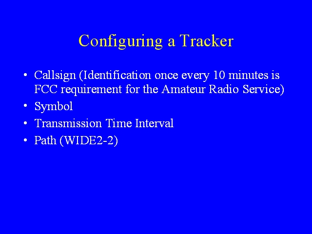

Notes:
A tracker must be programmed to operate legally and usefully. Because it is an amateur radio transmitter, the PocketTracker must use the call sign of the amateur radio operator who is programming it and turning it on. Trackers operate as Beacon stations under the FCC part 97 rules governing amateur radio. To produce a usable display, the symbol to displayed by mappers needs to be programmed into the tracker, as does the digipeater path, and the time interval at which the tracker transmits.